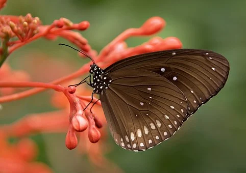
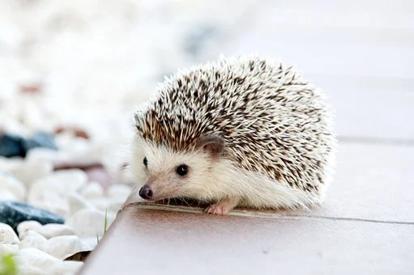

ANIMALS
What do Animals really think??? what do animal really think of man and his modern ways?Busy and tired, no time for joy a grind from morning to night.Has he forgotten the beauty and love all creatures were given for free? what do animal really think of life in the modern world?Has man forgot to touch of the earth its moist and fertile soil? Where are the flowers,crops of wheat Man through the ages have grown?No longer a care of everyday life someone else will takecare of the fields. What do animals really think of man rushing around by car?no time to walk, breathe of fresh air,see the bright blue sky above. What do animals really think of mans cold modern ways? How lucky they are to be who they are not part of mans modern ways.....
Animals are world class pet we keep to look out for humans they help us when we are in need
they serve as our protectors,friends,companion and close confidants.Ilove animals..



